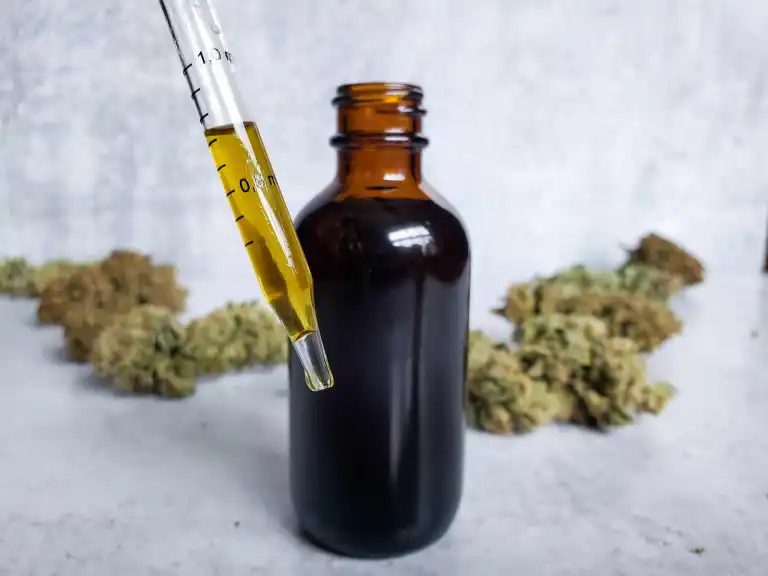

Cannabis Tincture
Cannabis Tincture

Tincture is a wonderful method for medicating with cannabis. It removes the carcinogenic concerns that are inherent with smoking, while allowing patients to achieve consistent, fast, replicable effects that capture the full spectrum of cannabinoids in a convenient and discrete method for administration.
But is it difficult to make tincture at home? Not at all! You probably have all the equipment on hand and most of the the ingredients. So let's get started! This is a multi-day project, but are going to break this down step-by-step so it'll be super easy to know what to do.
Equipment
- 7 grams cannabis flower
- 6 ounces Everclear, 190-proof
- 1 quart glass mason jar
- 2 - 8 ounce glass mason jars
- measuring cup or spoons
- small metal kitchen strainer
- cheesecloth
- paper coffee filter
- spoon, small spatula, or butter knife
- a crockpot, any size
- a freezer
Before we start anything, you are going to need to decarb your flower. The process of decarboxylation takes THC-A, the acidic, non-psychoactive version of THC, and breaks it down into the type of THC we are looking for. If you proceed without decarbing, you will make a powerful anti-inflammitory tincture, but it won't get you high. There aren't instructions for that in this recipe, but a quick google will show you what to do. If you would prefer a more fool-proof system to activate your cannabis, I recommend the Ardent. It is a simple push of a button to get precisely decarbed flower everytime. And you are supporting a small business owned by a woman of color! Double win! Anyway, I will assume your flower is decarbed before we start, so here we go!
Day 1
Today's Equipment
- cannabis flower
- everclear
- large mason jar
- 1 of the small mason jars
Steps
- Decarb your cannabis using your chosen method.
- Place decarbed cannabis into the large mason jar. Put it in your freezer.
- Fill the small mason jar with Everclear. Put it into the freezer to chill with your canabis flower.
- Come back tomorrow! You are done for the day. Let the cannabis and Everclear sit for at least 24 hours to get really cold.
Getting your cannabis super cold is also going to make it super brittle. This is good! We want to the flowers to break down easily during the next step.
Day 2
Today's Equipment
- jar of cold cannabis
- jar of cold Everclear
- cheesecloth
- small kitchen strainer
- spoon/spatula/butter knife
- paper coffee filter
- second small mason jar
- small measuring cup
Steps
- Measure 3oz of cold Everclear and add it to the large jar containing your cold, decarbed cannabis.
- Shake jar vigorously for 5 minutes. Place jar back into freezer for at least 2 hours, up to 24 hours.
- Strain the mixture into the second small jar, using a piece of cheesecloth placed inside of the small kitchen strainer. Strain well, getting as much moisture from the plant matter as possible.
- Return the cannbis flower to the large mason jar, and save the cheesecloth. Add another 3oz of cold Everclear to the cannabis flower. Shake vigorously for 5 minutes.
- Strain the mixture again into the same small mason jar, reusing the same piece of cheesecloth. Wipe the large jar clean of any remaining particles. Discard the cheesecloth.
- Strain the alcohol mixture again, this time using the kitchen strainer and the coffee filter. Strain into the large mason jar.
Day 2b
Today's Equipment
- crockpot
- large jar of infused and strained alcohol
- small washcloth
Steps
- Step up you crockpot in a well ventilated area, away from any open flames. (So not in your kitchen, especially if you have a gas stove.)
- Place small washcloth on the bottom of crockpot. Fill crockpot about halfway with hot water. Carefully place the open jar of alcohol into the crockpot.
- Turn the crockpot on high and allow the alcohol to evaporate off until it has reduced by half, about 3 ounces.
And there you have it, your tincture is now complete.